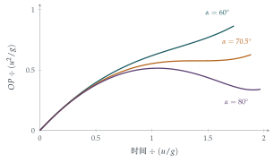

STEP II 2019，第 9 题
继续之前，请先阅读题目（原题为英文）。题目载于 OCR 提供下载的 2019 年 STEP 试卷（zip 文件）内的 STEP II 试卷： www.ocr.org.uk/Images/696590-2019-past-papers.zip
引子
把球向前抛出，它在落地之前会一直离你而去。这是理所当然的。把球垂直向上抛，它却会回到你手上。在这两种情况之间，必定有些事情起了变化：必定存在某些角度，令球先远离你，然后向你靠近，到落地之前又再远离。本题要找出的正是那个确切的分界线：\(\sin\alpha = \frac{2\sqrt2}{3}\)，即大约 \(70.5^\circ\)。
这个结果是数学中一种常见情况的好例子：人人都以为某个量是单调（monotonic）的，其实不然。它同时展示了一个在大学里经常用到的标准技巧：要判断一个距离是否正在增加，就对它的平方求导（differentiate），这样便可避开平方根。
动笔之前
为甚么处理 \(OP^2\) 比处理 \(OP\) 容易？“\(OP\) 递增”与“\(OP^2\) 递增”是同一回事吗？
\(OP^2 = x^2 + y^2\) 是 \(t\) 的多项式（polynomial），而 \(OP\) 则涉及平方根。由于 \(OP \geq 0\)，而平方运算在非负数上是递增的，所以 \(OP\) 递增的时候，正正就是 \(OP^2\) 递增的时候。
逐步解题
阶段 1 距离的平方
由 \(x = ut\cos\alpha\) 及 \(y = ut\sin\alpha - \frac12gt^2\)，可得 \[OP^2 = u^2t^2\cos^2\alpha + u^2t^2\sin^2\alpha - ugt^3\sin\alpha + \tfrac14g^2t^4 = u^2t^2 - ugt^3\sin\alpha + \tfrac14g^2t^4.\]
对 \(t\) 求导。抽出因子 \(t\) 之后，剩下的是甚么？它在甚么情况下对所有 \(t\) 皆为正？
\[\frac{\mathrm{d}}{\mathrm{d}t}OP^2 = 2u^2t - 3ugt^2\sin\alpha + g^2t^3 = t\bigl(g^2t^2 - 3ug\sin\alpha\,t + 2u^2\bigr).\] 当 \(t > 0\) 时，其正负号与二次式（quadratic）\(g^2t^2 - 3ug\sin\alpha\,t + 2u^2\) 的正负号相同。这个二次式的首项系数为正，所以只要它的判别式（discriminant）为负，它对每一个 \(t\) 都是正的： \[9u^2g^2\sin^2\alpha - 8u^2g^2 < 0 \quad\Longleftrightarrow\quad \sin^2\alpha < \frac89 \quad\Longleftrightarrow\quad \sin\alpha < \frac{2\sqrt2}{3}.\] 在这情况下，\(OP\) 在整个飞行过程中都在递增。■
阶段 2 较陡的抛掷
若 \(\sin\alpha > \frac{2\sqrt2}{3}\)，这个二次式有两个实根。它们是正数吗？较小的那个根是否出现在质点落地之前？
两根之和为 \(\frac{3u\sin\alpha}{g} > 0\)，两根之积为 \(\frac{2u^2}{g^2} > 0\)，所以两根皆为正数；而在两根之间，这个二次式为负，因而 \(\frac{\mathrm{d}}{\mathrm{d}t}OP^2\) 也为负。质点在 \(T = \frac{2u\sin\alpha}{g}\) 时落地。较小的根是 \[t_1 = \frac{u}{2g}\bigl(3\sin\alpha - \sqrt{9\sin^2\alpha - 8}\bigr) < \frac{u}{2g}\cdot3\sin\alpha < \frac{2u\sin\alpha}{g} = T.\] 所以紧接 \(t_1\) 之后（而且在落地之前），\(OP\) 正在递减。■

阶段 3 移动的观察者
\(Q\) 沿地面朝相反方向以速率 \(v\) 离开 \(O\)。从 \(Q\) 量度，水平距离是 \(x + vt\)。这对计算有甚么影响？
间距 \(QP\) 的水平分量为 \((u\cos\alpha + v)t\)，垂直分量为 \(ut\sin\alpha - \frac12gt^2\)。所以 \[QP^2 = \bigl((u\cos\alpha + v)^2 + u^2\sin^2\alpha\bigr)t^2 - ugt^3\sin\alpha + \tfrac14g^2t^4,\] 与之前的式子相同，只是第一项中的 \(u^2\) 换成了 \(w^2 = (u\cos\alpha + v)^2 + u^2\sin^2\alpha\)。其导数（derivative）为 \(t\bigl(g^2t^2 - 3ug\sin\alpha\,t + 2w^2\bigr)\)，而它对所有 \(t > 0\) 皆为正的条件是 \[9u^2\sin^2\alpha < 8w^2 \quad\Longleftrightarrow\quad u^2\sin^2\alpha < 8(u\cos\alpha + v)^2,\] 这是在两边消去 \(8u^2\sin^2\alpha\) 之后所得的结果。两边取平方根（\(u\sin\alpha\) 与 \(u\cos\alpha + v\) 皆为正数），即得 \(u\sin\alpha < 2\sqrt2(u\cos\alpha + v)\)，整理后就是 \[2\sqrt2\,v > (\sin\alpha - 2\sqrt2\cos\alpha)u. \qed\] （这个条件足以令 \(QP\) 在整个飞行过程中递增，因为此时导数对所有 \(t > 0\) 皆为正。）
回顾
对平方求导。距离的平方是多项式，而它的导数与距离本身的导数正负号相同。
恒为正的二次式。“在所有时间都递增”这个条件，化成了一个关于判别式的条件。
把新问题化为旧问题。移动的观察者只改变了一个系数，所以之前的分析可以直接套用。
背后的数学
几何观点
\(OP\) 递减的时候，正正就是 \(P\) 的速度指向“内侧”的时候，即速度与向量 \(\overrightarrow{OP}\) 成钝角（obtuse angle），也就是 \(\overrightarrow{OP}\cdot\mathbf{v} < 0\) 的时候。对于陡峭的抛掷，质点在接近飞行最高点时，位于抛球者的高处而略为偏前，几乎是水平地向外移动，但已开始下坠；相对于 \(\overrightarrow{OP}\) 的方向而言，一旦速度中向下的部分盖过向外的部分，质点便会靠近。对于较平的抛掷，质点总是在前方足够远的位置，以致它的速度从不指回 \(O\)。临界情况就是速度恰好只在一个瞬间与 \(\overrightarrow{OP}\) 垂直，亦即图 11.10.1 中距离停顿的那一刻。
单调性并非必然
许多“显然”会增加的量，其实并不如此。月球与地球的距离会来回振荡；在弯曲的路上，即使其中一辆车一直领先，两车之间的距离仍可以减少；猎物大量繁殖的时候，捕食者的数量却可以下降。要证明一个量是单调的，通常就是要证明某个导数的正负号固定不变，而这里所用的技巧（化为多项式，再检查它的根或判别式）正是标准的做法。在分析学（analysis）中，单调性往往是证明收敛（convergence）的关键：有界的单调数列必定收敛，正如你在第 2 章所见。
思维技巧
要判断一个量是否一直递增，可对它（或对它的某个方便处理的函数，例如它的平方）求导，然后问：导数会否变号？
在大学里，这类关于正负号的论证会用来证明不等式、找出极大值和极小值，以及研究微分方程（differential equation）解的稳定性；在后者中，一个一直递减的量（如 第 8.2 节 所示）便证明了系统会趋于平稳。
延伸练习
有多近？对于 \(\alpha = 80^\circ\)，求 \(OP\) 取得局部极大值（local maximum）和局部极小值（local minimum）的时间，以及该两刻的距离，以 \(u^2/g\) 为单位。
在斜面上。把球沿一个与水平成 \(\beta\) 角的斜面向上抛出，并落在斜面上，就这个情况重做第 (i) 部分。临界角（从斜面量起）会改变吗？
考虑空气阻力。假设球还受到一个与其速度成正比的阻力（resistance）。不作计算，你预期临界角会大于还是小于 \(70.5^\circ\)？为甚么？
从高处抛出。若球从悬崖顶抛出，并落在远低于崖顶的地方，证明无论以甚么角度抛出，\(OP\) 最终都会递增，并判断是否存在某些角度，令它在某个阶段递减。
延伸阅读
James Walker, The Flying Circus of Physics（Wiley）。数以百计出人意表的日常物理谜题。
David Morin, Introduction to Classical Mechanics（Cambridge University Press），第 3 章，讲述抛体运动，并附有数道有违直觉的题目。
J. M. Steele, The Cauchy–Schwarz Master Class（Cambridge University Press）。证明一样东西恒大于另一样东西的艺术。